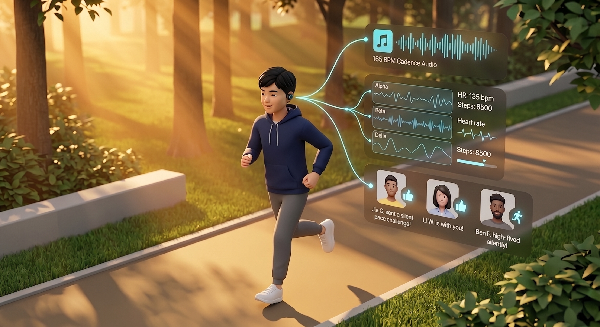
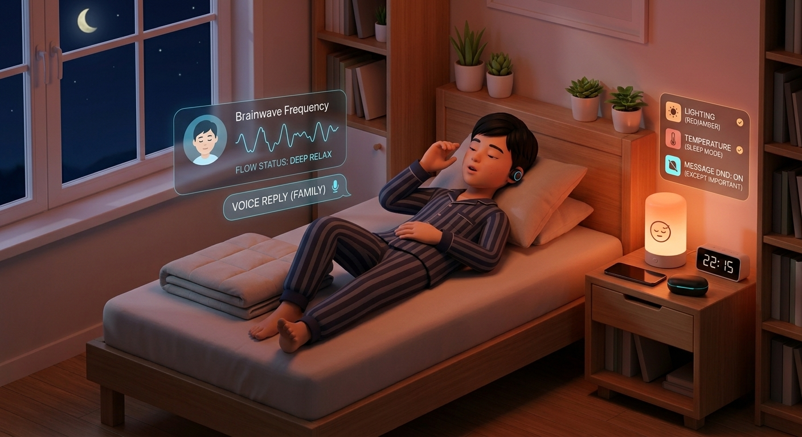

🕒
全天 5 大真实生活场景流 (点击切换时间，查看家庭环境与数字自律如何协同运作)
07:00
🌅
清晨自然唤醒
告别赖床惊醒与亲子争吵
10:30
📚
自习专注守护
写作业走神与3秒冷静
16:30
🏃
傍晚户外运动
165 BPM律动与跑完即时夸奖
19:30
📖
晚间自习防扰
免受推门打扰，间歇关怀
22:15
🎧
睡前黑屏深睡
听微信不亮屏，深睡微声波





🌅 07:00 清晨卧室 · 阳光自然唤醒，身体神清气爽
场景 1/5：家庭晨间卧室
1
青少年：自然清醒伸懒腰，早起不头晕、不烦躁
2
床头日出灯：模拟大自然晨光慢慢变亮
3
智能充电仓与时钟：晨起随手放入磁吸充电，全天零佩戴负担
场景 1：清晨自然唤醒，告别赖床与争吵
🎧 耳塞状态：
夜间深睡监测完成 · 准备取下入仓
🏠 房间物联：
日出灯 5000K 渐亮 · 暖气微升温至 23℃
🚨
过去老痛点（真实家庭矛盾）
闹钟突然刺耳尖叫，小明在深睡中被强行震醒，整个人头昏脑胀；父母推门催促，小明烦躁发脾气，早晨全家爆发争吵。
✨
Cue 怎么解决（生活改变）
闹钟前 20 分钟，床头灯像清晨日出一样缓缓变亮，房间悄悄升温到 23℃；身体接收到晨光自然清醒，起床神清气爽，耳塞取下放回充电仓。
💬
真实家庭情境对话演示
妈妈：“早呀小明，昨晚睡得香吗？今天早餐做了热牛奶和煎蛋。”
小明：“挺好的！今天阳光照进来就自然醒了，感觉很有精神。”
小明：“挺好的！今天阳光照进来就自然醒了，感觉很有精神。”
🎙️
AI 动机教练晨间鼓励语音
“早安小明！昨晚深睡了 2.4 小时，精神很棒！今天为你设定了‘傍晚运动 30 分钟’的小挑战，开启充沛的一天吧！”
🔬
晨光模拟与皮质醇平稳唤醒机制
清晨日出光谱（5000K，300 Lux）刺激视网膜感光节细胞（ipRGC），抑制褪黑素并平稳激活皮质醇觉醒反应（CAR）；配合室温回升促进身体复温，从神经生理层面消除起床昏沉（Sleep Inertia）。
📚 核心学术文献支撑
• Berson et al. (Science 2002): 视网膜内在感光节细胞 (ipRGCs) 视黑质通路投射至视交叉上核 (SCN)；
• NICE MTG70 (2022): 光照渐进干预抑制褪黑素并激活皮质醇觉醒反应 (CAR)；
• Wertz et al. (JAMA 2006): 渐进光照显著缩短睡眠惯性 (Sleep Inertia) 昏沉期。
• NICE MTG70 (2022): 光照渐进干预抑制褪黑素并激活皮质醇觉醒反应 (CAR)；
• Wertz et al. (JAMA 2006): 渐进光照显著缩短睡眠惯性 (Sleep Inertia) 昏沉期。
🔄
端到端全流程协同：[感知输入] ➔ [AI 判断] ➔ [房间与手机协同行动]
📥 [感知输入]
到达预定唤醒前 20 分钟 ➔ 身体进入浅睡过渡期 ➔ 室内准备渐亮
➔
🧠 [AI 判断]
判断最佳唤醒时机 ➔ 启动日出渐亮算法 ➔ 生成晨间运动小挑战与家长沟通提示
➔
📤 [协同行动]
卧室灯光温柔变亮 ➔ 房间微升温促进复温 ➔ 家长端提示‘孩子自然清醒，请给予肯定’